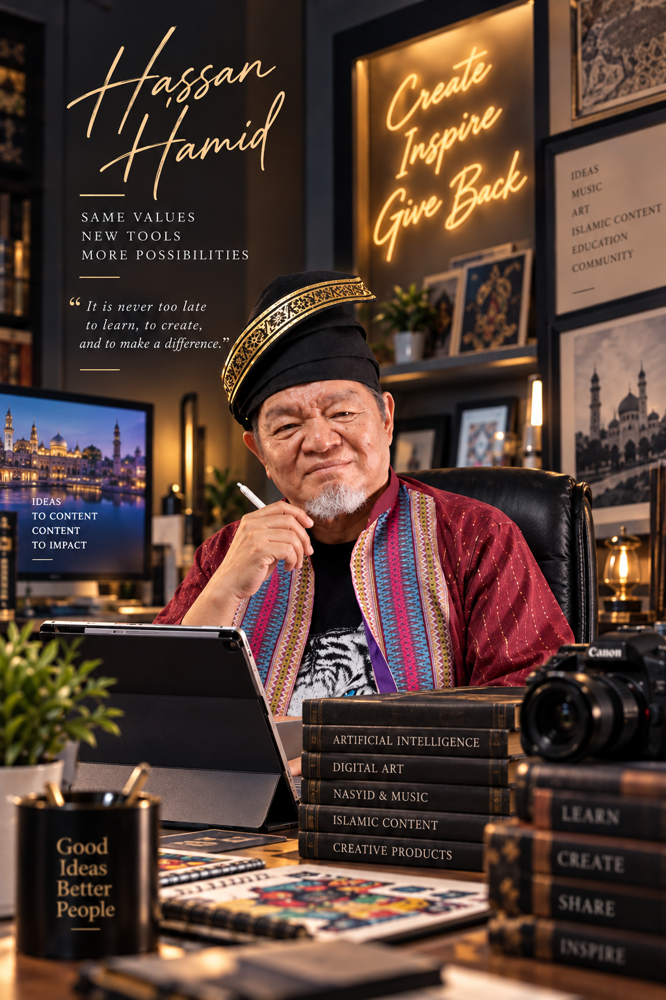
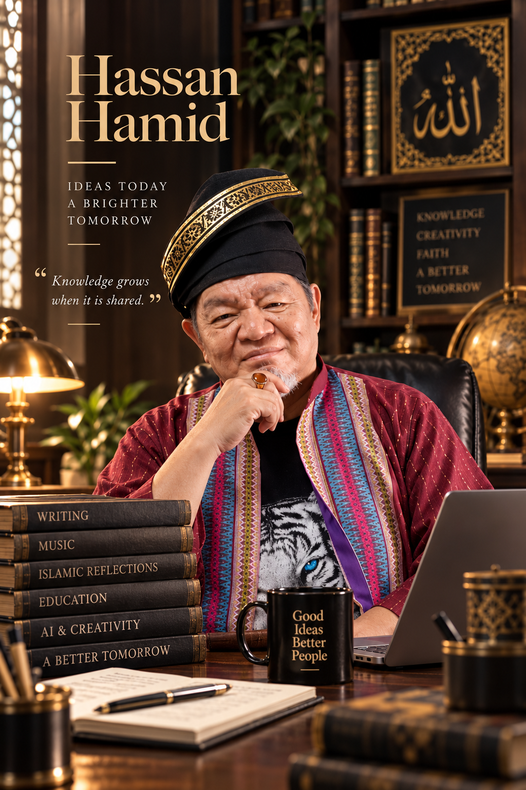
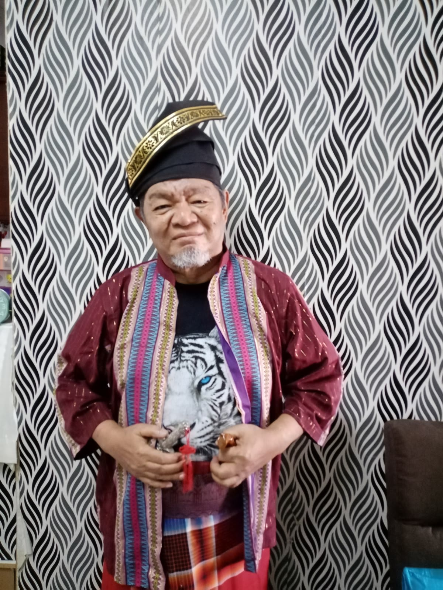

Penulisan & E-book
Rambling Nonsense · For the Love of Our Grandchildren · Warga Emas Alaf Baru
A LIFELONG LEARNER & INDEPENDENT CREATOR
Daripada pengalaman kepada idea. Daripada idea kepada karya. Daripada karya kepada sesuatu yang bermanfaat.

01 / THE STORY
Setelah bertahun-tahun dalam kejuruteraan dan perundingan, saya memasuki satu fasa baharu dalam hidup — meneroka teknologi Artificial Intelligence dan menggunakannya untuk menulis, menghasilkan muzik, membina bahan pendidikan, mencipta ilustrasi dan mengembangkan idea menjadi karya.
AI bagi saya ialah alat. Idea, pengalaman dan mesej tetap bermula daripada manusia.
02 / THE JOURNEY
Daripada engineering kepada penulisan, muzik, pendidikan, AI dan karya visual.
University of Salford, United Kingdom
Jabatan Parit dan Taliair, kini dikenali sebagai Jabatan Pengairan dan Saliran (JPS)
Meneruskan kerjaya dalam sektor swasta.
Universiti Sains Malaysia, Pulau Pinang — Pembangunan Islam
Writing · Music · Education · Illustration · Video · Digital & Physical Products
03 / THE CREATIVE PROCESS
Satu idea boleh berkembang menjadi pelbagai bentuk.
IDEA→TEXT→MUSIC→VIDEO→ILLUSTRATION→PRODUCT
04 / KARYA & PROJEK
Perjalanan kreatif ini merangkumi penulisan, muzik, pendidikan, kandungan Islamik, ilustrasi, video dan produk.
Rambling Nonsense · For the Love of Our Grandchildren · Warga Emas Alaf Baru
Reflections of Iman · Lagu · Lirik · Video berserta lirik
Kajian ringkas, pengajaran, lirik, nasyid, voice-over, video dan bahan visual.
Periodic Table Songs · English Tenses Songs · Quiz · Crossword · Teacher/Parent Guide
HAWAU · CENCALOK · Ilustrasi dan bahan peringatan
Wallpaper · Poster · Magnet · Mousepad · T-shirt · Mug · Cenderamata
Islamik · Motivasi · Kehidupan · Pendidikan · Humor · Melaka
Kata-kata peringatan, mnemonik, motivasi, ilustrasi dan tema pendidikan/Melaka.
Magnet · Mousepad · Keychain · Sticker · Mug · T-shirt · Poster
Humor · permainan bahasa · identiti tempatan
Ungkapan harian Malaysia untuk produk kecil dan cenderamata
Artikel · Lirik · Lagu · Voice-over · Video · Ilustrasi · Wallpaper
Idea · Writing · Lyrics · Music · Voice · Illustration · Video · Education
Idea → tulisan → lagu → video → ilustrasi → wallpaper → produk
Menggunakan masa, pengalaman dan teknologi untuk menghasilkan sesuatu yang bermanfaat.
05 / REFLECTIONS
QURAN • REFLECTION • CREATION
Antara projek yang ingin dikembangkan ialah kajian terhadap surah-surah Al-Quran, mengenal pasti tema dan pengajaran utama, kemudian mengolahnya menjadi lirik, nasyid, voice-over, video dan bahan visual.
06 / THE GALLERY
Koleksi ilustrasi akan dikembangkan di sini mengikut tema dan projek.

Artworks, mnemonics & reminders
Words, ideas & life observations
Local humour & souvenir concepts

07 / THE STORE
FROM DIGITAL TO SOMETHING YOU CAN HOLD
Karya digital boleh dikembangkan menjadi wallpaper, magnet, mousepad, keychain, sticker, mug, T-shirt, poster dan cenderamata.
08 / A LATER-LIFE JOURNEY
Usia bukan penghalang untuk meneroka sesuatu yang baharu. Pengalaman yang telah dilalui boleh digabungkan dengan teknologi baharu untuk menghasilkan sesuatu yang bermanfaat.
“Selagi masih mempunyai idea, selagi masih mampu belajar dan menghasilkan sesuatu, saya ingin terus berkarya.”
09 / CONTACT
Website ini dibina sebagai ruang untuk karya, projek, refleksi dan produk Hassan Hamid.